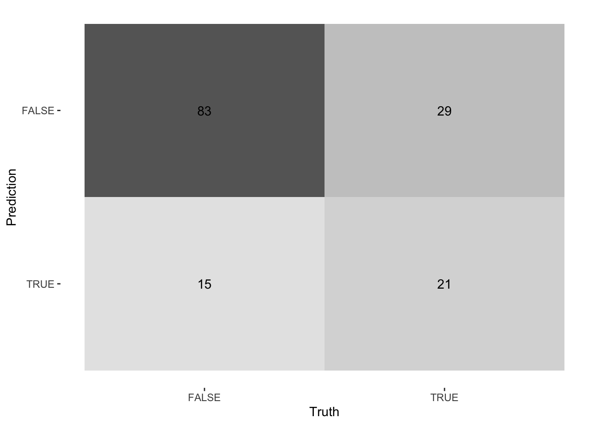
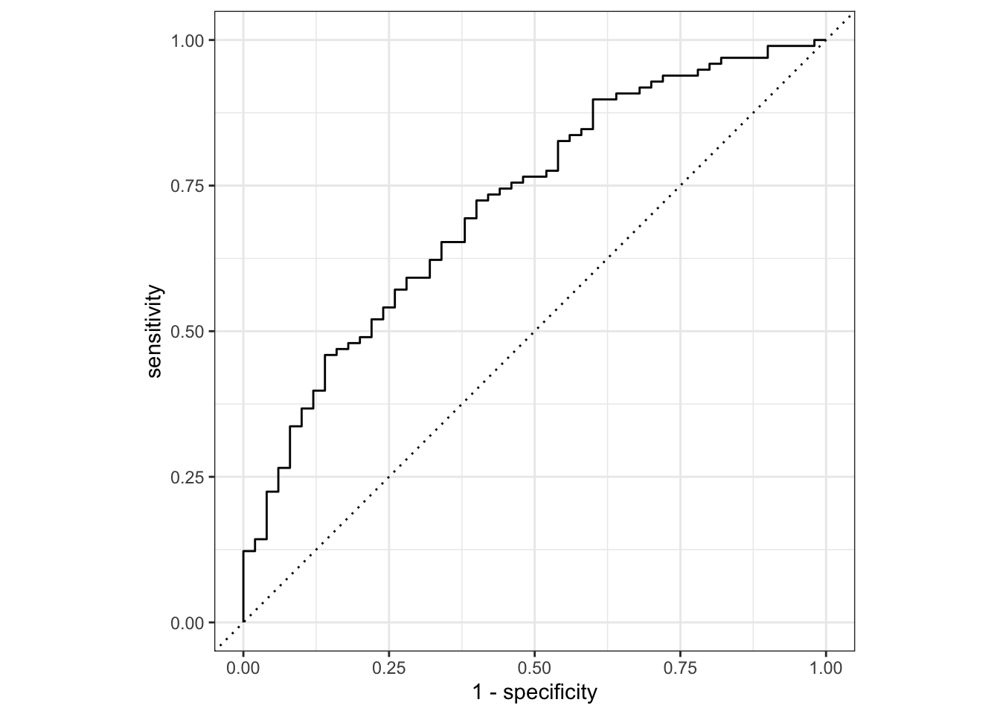

data_path <- paste0(Sys.getenv("HOME"), "/Library/CloudStorage/",
"OneDrive-OxfordUniversityClinicalResearchUnit/",
"GitHub/choisy/typhoid/")Logistic regression
Global parameters
Package
library(dplyr)
library(purrr)
library(rsample)
library(parsnip)
library(recipes)
library(workflows)
library(yardstick)Utilitary functions
logical2factor <- function(x) factor(x, c("FALSE", "TRUE"))Reading the clean data
The Nepal dataset:
nepal <- paste0(data_path, "clean_data/nepal.rds") |>
readRDS() |>
mutate(across(c(cough, diarrhea, vomiting, abdominal_pain, constipation, headache),
as.logical),
across(c(age, platelets), as.numeric),
across(where(is.logical), logical2factor)) |>
select(-starts_with("score"))The Cambodia and Bangladesh dataset:
cambodia_bangladesh <- paste0(data_path, "clean_data/cambodia_bangladesh.rds") |>
readRDS() |>
mutate(across(where(is.logical), logical2factor)) |>
select(-country)Checking the consistency of the levels of the factors between the two datasets:
levels_nepal <- nepal |>
select(sex, IgM, CRP) |>
map(levels)
levels_cambodia_bangladesh <- cambodia_bangladesh |>
select(sex, IgM, CRP) |>
map(levels)
identical(levels_nepal, levels_cambodia_bangladesh)[1] TRUErm(levels_nepal, levels_cambodia_bangladesh)Logistic regression
logistic_regression <- glm(culture ~ ., binomial, nepal)summary(logistic_regression)
Call:
glm(formula = culture ~ ., family = binomial, data = nepal)
Coefficients:
Estimate Std. Error z value Pr(>|z|)
(Intercept) -4.012330 4.749167 -0.845 0.39820
sexmale -0.263858 0.233707 -1.129 0.25889
age -0.034254 0.014472 -2.367 0.01794 *
fever -0.078164 0.050551 -1.546 0.12205
coughTRUE -0.310520 0.230973 -1.344 0.17882
diarrheaTRUE 0.578428 0.254738 2.271 0.02317 *
vomitingTRUE 0.142624 0.249904 0.571 0.56819
abdominal_painTRUE 0.190299 0.240652 0.791 0.42908
constipationTRUE 0.591177 0.319904 1.848 0.06460 .
headacheTRUE 0.552221 0.371123 1.488 0.13676
pulse -0.001685 0.007798 -0.216 0.82888
temperature 0.134973 0.126745 1.065 0.28691
splenomegalyTRUE 0.208352 0.595006 0.350 0.72621
hepatomegalyTRUE 0.114092 0.516428 0.221 0.82515
WBC -0.101011 0.049566 -2.038 0.04156 *
platelets -0.001350 0.002055 -0.657 0.51119
ALT 0.004041 0.002605 1.551 0.12082
IgM.L 1.903861 0.840420 2.265 0.02349 *
IgM.Q -1.008020 0.733007 -1.375 0.16907
IgM.C -0.056546 0.558514 -0.101 0.91936
IgM^4 -0.643128 0.411322 -1.564 0.11792
CRP.L 1.280923 0.459302 2.789 0.00529 **
CRP.Q -0.558279 0.360120 -1.550 0.12108
CRP.C 0.386951 0.252389 1.533 0.12524
---
Signif. codes: 0 '***' 0.001 '**' 0.01 '*' 0.05 '.' 0.1 ' ' 1
(Dispersion parameter for binomial family taken to be 1)
Null deviance: 712.41 on 592 degrees of freedom
Residual deviance: 541.11 on 569 degrees of freedom
(10 observations deleted due to missingness)
AIC: 589.11
Number of Fisher Scoring iterations: 5logistic_regression
Call: glm(formula = culture ~ ., family = binomial, data = nepal)
Coefficients:
(Intercept) sexmale age fever
-4.012330 -0.263858 -0.034254 -0.078164
coughTRUE diarrheaTRUE vomitingTRUE abdominal_painTRUE
-0.310520 0.578428 0.142624 0.190299
constipationTRUE headacheTRUE pulse temperature
0.591177 0.552221 -0.001685 0.134973
splenomegalyTRUE hepatomegalyTRUE WBC platelets
0.208352 0.114092 -0.101011 -0.001350
ALT IgM.L IgM.Q IgM.C
0.004041 1.903861 -1.008020 -0.056546
IgM^4 CRP.L CRP.Q CRP.C
-0.643128 1.280923 -0.558279 0.386951
Degrees of Freedom: 592 Total (i.e. Null); 569 Residual
(10 observations deleted due to missingness)
Null Deviance: 712.4
Residual Deviance: 541.1 AIC: 589.1round(coef(logistic_regression)) (Intercept) sexmale age fever
-4 0 0 0
coughTRUE diarrheaTRUE vomitingTRUE abdominal_painTRUE
0 1 0 0
constipationTRUE headacheTRUE pulse temperature
1 1 0 0
splenomegalyTRUE hepatomegalyTRUE WBC platelets
0 0 0 0
ALT IgM.L IgM.Q IgM.C
0 2 -1 0
IgM^4 CRP.L CRP.Q CRP.C
-1 1 -1 0 Tidymodels
data_splits <- initial_split(nepal)
training_data <- training(data_splits)
testing_data <- testing(data_splits)model <- logistic_reg() |>
set_engine("glm") |>
set_mode("classification")model <- logistic_reg("classification", "glm")the_recipe <- recipe(culture ~ ., training_data)the_workflow <- workflow(the_recipe, model)fitted_model <- fit(the_workflow, training_data)predict(fitted_model, testing_data)# A tibble: 151 × 1
.pred_class
<fct>
1 FALSE
2 FALSE
3 FALSE
4 FALSE
5 FALSE
6 FALSE
7 FALSE
8 FALSE
9 FALSE
10 FALSE
# ℹ 141 more rowsaugment(fitted_model, testing_data) |>
conf_mat(truth = culture, estimate = .pred_class) |>
autoplot(type = "heatmap")
augment(fitted_model, testing_data) |>
accuracy(truth = culture, estimate = .pred_class)# A tibble: 1 × 3
.metric .estimator .estimate
<chr> <chr> <dbl>
1 accuracy binary 0.703augment(fitted_model, testing_data) |>
sensitivity(truth = culture, estimate = .pred_class)# A tibble: 1 × 3
.metric .estimator .estimate
<chr> <chr> <dbl>
1 sensitivity binary 0.847augment(fitted_model, testing_data) |>
specificity(truth = culture, estimate = .pred_class)# A tibble: 1 × 3
.metric .estimator .estimate
<chr> <chr> <dbl>
1 specificity binary 0.42augment(fitted_model, testing_data) |>
roc_curve(truth = culture, .pred_FALSE)# A tibble: 150 × 3
.threshold specificity sensitivity
<dbl> <dbl> <dbl>
1 -Inf 0 1
2 0.0286 0 1
3 0.0555 0.0200 1
4 0.0689 0.0200 0.990
5 0.0815 0.0400 0.990
6 0.0954 0.0600 0.990
7 0.107 0.0800 0.990
8 0.123 0.1 0.990
9 0.123 0.1 0.980
10 0.165 0.1 0.969
# ℹ 140 more rowsaugment(fitted_model, testing_data) |>
roc_curve(truth = culture, .pred_FALSE) |>
autoplot()
augment(fitted_model, testing_data) |>
roc_auc(truth = culture, .pred_FALSE)# A tibble: 1 × 3
.metric .estimator .estimate
<chr> <chr> <dbl>
1 roc_auc binary 0.720